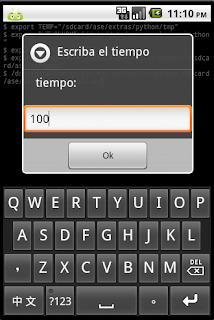

Widgets en Android con python. Parte 2 (barra de progreso)
Posted on mié 14 julio 2010 in Tutorial Python en Android • 1 min read
Continuando los artículos sobre la creación de widgets de Android con python.
Está vez se creará un programa que pida un número y luego ese número es el tiempo de ejecución de una barra de progreso.
El código es el siguiente:
#Importar módulo android y time
import android,time
#instanciación de la clase android
droid = android.Android()
#Definir mensajes
titulo = "Horizontal"
mensaje = "Este es una barra de progreso horizontal"
#Se pide el tiempo de ejecución en seg
numero = droid.getInput("Escriba el tiempo","tiempo:")
#Crear la barra horizontal con título, mensaje y el número
droid.dialogCreateHorizontalProgress(titulo,mensaje,int(numero[1]))
#Se muestra la barra de progreso
droid.dialogShow()
#ejecución del ciclo en 0.1 seg de la barra de progeso
for i in range(0,int(numero[1])):
time.sleep(0.1)
droid.dialogSetCurrentProgress(i)
#Se cierra la barra de progeso
droid.dialogDismiss()
El programa no evalua si la entrada de datos es un número entero, eso se logra manejando excepciones en python.
A continuación se muestra la imagen de la entrada de datos.

La siguiente imagen es la barra de progreso en ejecución.

A continuación se muestra el código qr del programa en python.

===
¡Haz tu donativo! Si te gustó el artículo puedes realizar un donativo con Bitcoin (BTC) usando la billetera digital de tu preferencia a la siguiente dirección: 17MtNybhdkA9GV3UNS6BTwPcuhjXoPrSzV
O Escaneando el código QR desde billetera: